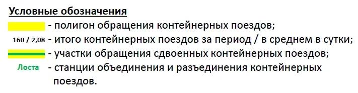

| Год | Месяц | Код отпр. | Станция отправления | Код назн. | Станция назначения | Тип | Кол-во поездов |
|---|

Справка по работе с приложением
Приложение хранит помесячные данные по участкам, рассчитывает среднесуточные размеры движения, размещает мини-таблицы на картографической подложке и экспортирует готовую схему в PDF.
Быстрый порядок работы
- На вкладке База данных нажмите Импорт из Excel и выберите файл.
- Укажите год и месяц, к которым относятся все строки импортируемого файла.
- Проверьте записи, при необходимости используйте фильтр или кнопку Редактировать.
- Перейдите на вкладку Карта и нажмите Выбрать подложку.
- Задайте месяц или диапазон месяцев и нажмите Сформировать таблицы.
- Выберите участки и режим: полный список из 6 типов или сокращённую группировку.
- Разместите точки и таблицы, затем нажмите Сохранить PDF.
Что делают кнопки базы данных
- Импорт из Excel: добавляет строки из первого листа файла к уже имеющейся базе.
- Сохранить проект JSON: сохраняет базу, период, выбранные участки, номера и координаты выносок.
- Загрузить проект JSON: восстанавливает ранее сохранённый проект.
- Группировка: объединяет записи по месяцам для компактного просмотра.
- Редактировать: разрешает менять значения и удалять строки. Завершите работу кнопкой Сохранить.
- Фильтр: ищет по всем полям или по выбранной колонке. Enter также запускает поиск.
Импорт Excel добавляет данные, а не заменяет существующие. Перед повторной загрузкой того же месяца проверьте, нет ли дублей.
Форма таблицы Excel
Данные читаются только с первого листа. Используются первые шесть колонок строго в порядке A–F. Заголовок разрешён и будет пропущен, если в первой строке встречаются слова «код» и «станция».
| A: Код отправления | B: Станция отправления | C: Код назначения | D: Станция назначения | E: Тип | F: Количество |
|---|---|---|---|---|---|
001 |
Москва | 002 |
Санкт-Петербург | 1 | 25 |
002 |
Санкт-Петербург | 001 |
Москва | 2 | 18 |
Требования к значениям
- Коды и названия четырёх первых колонок обязательны. Строки без этих значений пропускаются.
- Коды лучше заранее задать в Excel как текст, чтобы сохранить ведущие нули, например
001. - Тип должен быть целым числом от 1 до 6. Пустое или неверное значение будет принято как тип 1.
- Количество должно быть целым числом. Пустое или неверное значение будет принято как 0.
- Год и месяц в Excel не требуются: они задаются в отдельном окне после выбора файла и применяются ко всем импортируемым строкам.
Размещение объектов на карте
- Обычная выноска: создаётся небольшая точка без номера, таблица без названия и пунктирная линия между ними.
- Удалённая выноска: точка и мини-таблица содержат только одинаковый номер. После создания точки щёлкните в месте таблицы и выберите нужный участок из списка.
- Точку и таблицу можно перетаскивать мышью. Колесо мыши и кнопки справа изменяют масштаб.
- Обновить информацию пересчитывает таблицы после изменения периода или базы.
При экспорте таблицы автоматически раздвигаются, если их прямоугольники пересекаются. Координаты сохранённого проекта при этом не меняются.
Подложка, легенда и PDF
- Подложка выбирается отдельно как графический файл. Она не включается в JSON проекта.
- Легенда условных обозначений включена в приложение и автоматически добавляется в PDF.
- Если легенда отсутствует или повреждена, PDF сформируется без неё.
- Во время экспорта показывается заставка с ориентировочным временем и счётчиком ожидания.
- Скорость зависит от размеров подложки, числа мини-таблиц и мощности компьютера. Не закрывайте страницу до начала скачивания.
Рекомендуемое сохранение проекта
После размещения выносок сохраните проект JSON. Для полного восстановления рабочего места храните рядом app.html, JSON проекта и выбранную картографическую подложку. JSON содержит данные и координаты, но не содержит изображение подложки.